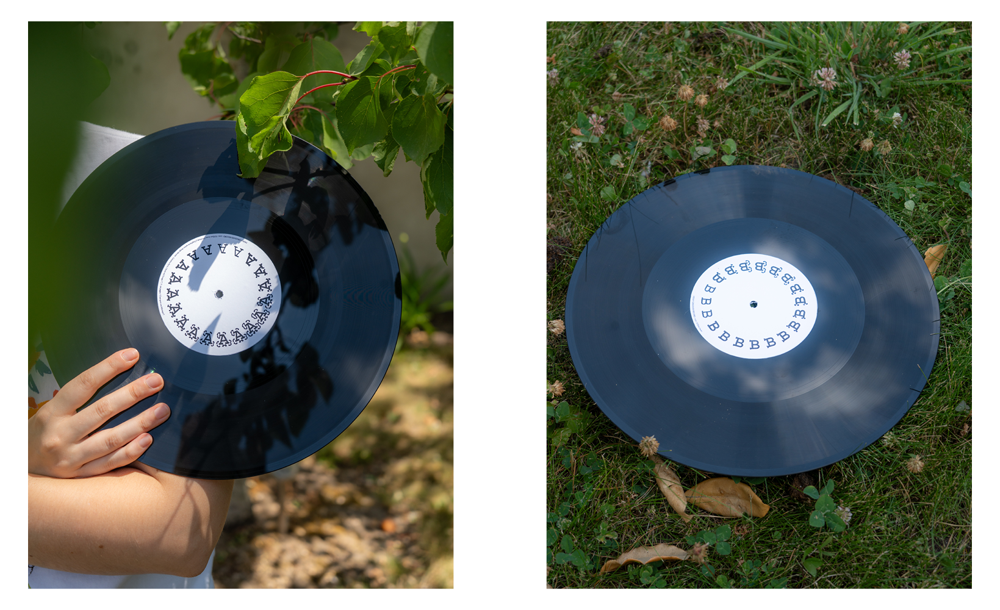
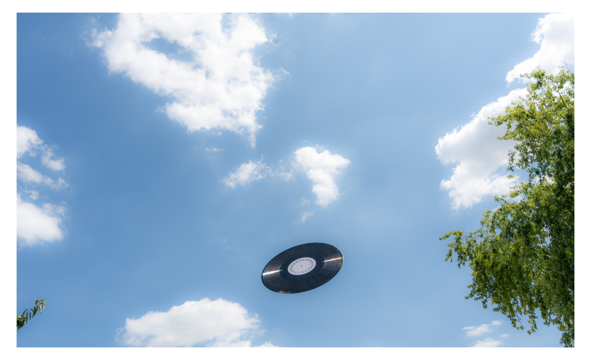
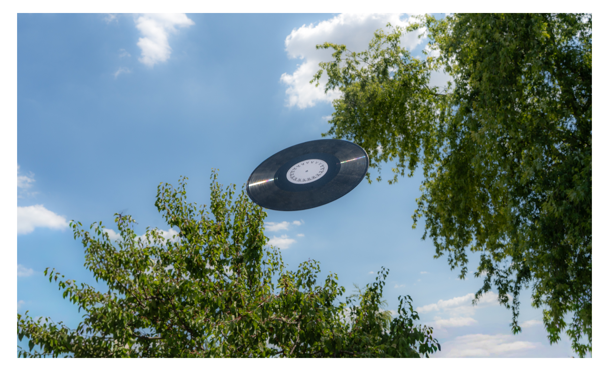
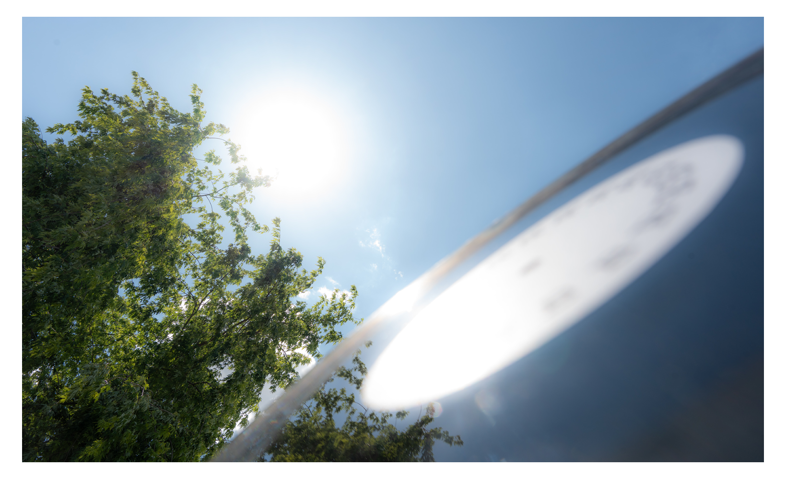
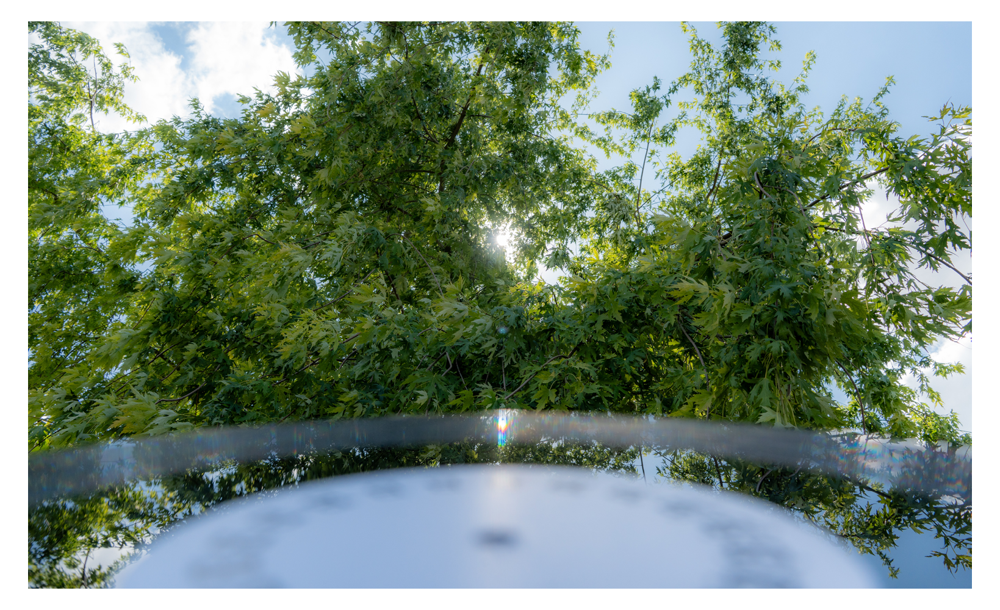
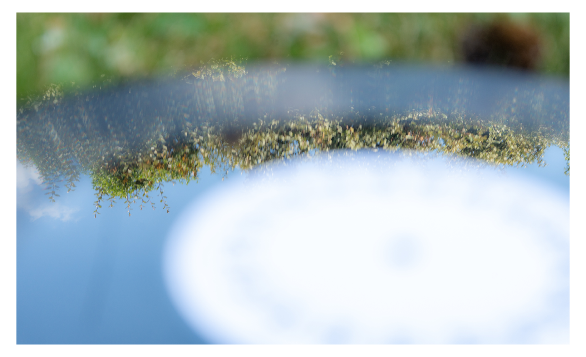

192 pages
2026
2026






Un objet hybride :
192 pages, pressées en seulement 4 exemplaires, à la fois livre et disque, on le lit autant qu'on l'écoute.
Il relie le projet Made et un projet de cours :
Il fallait répondre à la question :
"C'est quoi une mixtape ?"
Alors j'ai ramené toute la matière déjà écouté dans les vinyles et j'en ai fais une mixtape.
Ma mixtape : ma voix, des mots, des sons de nature (soundscapes), des enregistrements bruts, des collages, et une composition personnelle.
Tout ça forme MA mixtape.
À l'origine, une mixtape, c'est gratuit.
C'est un geste : du partage, sans logique commerciale.
Mais le mot a été récupéré et industrialisé aujourd'hui, il sert surtout à faire du marketing.
Ce projet, je l'ai fait jusqu'au bout, jusqu'à presser
4 vinyles chez Heavy Grooves Records.